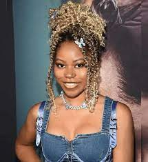

C.A. Nkatha

A Great Grandmother, mother and sister.
Claire Nkatha was a remarkable individual who made a significant impact on the world. Her contributions to healtcare were groundbreaking, and their legacy will continue to inspire generations to come.
Claire was known for her dedication, passion, and commitment to her work. She was a role model to many, and her influence can still be felt today.
In honor of Claire Nkatha, we would like to take a moment to reflect on her life and achievements. Her legacy will live on forever, and her memory will always be cherished.